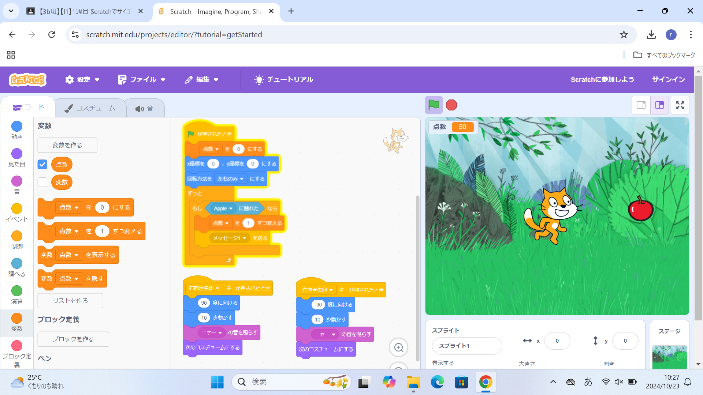

1-2 ゲーム

1.内容
ネコを移動させて、落ちてくるりんごをキャッチするゲームを作った。ネコとりんごの２つのプログラムを作成して、
それぞれの動きをプログラミングした。ネコには、音を鳴らしたり、コスチュームを変えたり、りんごに触れると点数を加算したりする
プログラミングをし、りんごには、落ちる速度や位置をランダムにするプログラミングをした。
2.感想
さっきより少し複雑なプログラミングだったが、仕組みを理解しながら作成できた。そして、実際に作ったゲームで誤作動なく、
遊ぶことができて楽しかった。基本操作に加えて、ネコをジャンプさせる機能を追加したり、背景にBGMを流したりすることで
よりゲームを面白くすることができた。